# Load RTMB first and RTMBdist second.
library(RTMB)
library(RTMBdist)Chapter 6: Fitting ecological response curves — solutions
These solutions use the same data, tasks and seeds as the student practical page. Exercise 1 is worked in full on both pages, because Exercise 4 continues with its objects. Exercises 1 to 3 are the core of the practical and Exercise 4 is extra practice. The exercises run in one R session: later exercises reuse the helper cmb() and the objects critical_value and n_sim of Exercise 1.
As on that page, we load RTMB first and RTMBdist second:
1 Exercise 1: Virus titre in infected rabbits
The data set MyxoTiter_sum in the package emdbook contains the titre of the myxoma virus in the blood of European rabbits on different days after infection, for viruses of four grades (Fenner and McIntyre 1956; the values were read from a figure in Dwyer et al. 1990). The titre measures the concentration of virus and is expressed as the logarithm in base 10 of the number of rabbit infectious doses. As in the Chapter 5 practical, we keep the 27 observations of grade 1, which were taken between 2 and 9 days after infection, and put the day and the titre of each observation in a list of data:
# Load the myxomatosis data from the emdbook package without attaching the package.
data(MyxoTiter_sum, package = "emdbook")
# Keep the observations of virus grade 1: the day after infection and the titre.
grade_1 = MyxoTiter_sum[MyxoTiter_sum$grade == 1, ]
titre_data = list(day = grade_1$day, titre = grade_1$titer)In Exercise 1 of the Chapter 5 practical we described the rise and fall of the titre with the Ricker function, \(f(x)=a\,x\,e^{-bx}\), where \(x\) is the time since infection in days. From a peak read by eye on day 6 with a titre of 7.6 we calculated \(a=3.44\) units of titre/day and \(b=1/6\approx0.167\)/day. Here we fit the curve to the observations, which we treat as independent.
- On paper, write the model with the Ricker curve for the mean titre and a Normal observation model with a constant standard deviation \(\sigma\). Give the units of \(a\), \(b\) and \(\sigma\). The titres in these data are all positive; why can a Normal model, which allows any real value, be used for them? (question 2 asks you to check this with the fitted model, for now just think what you would check to verify this).
- Write the negative log-likelihood (NLL) with \(\log(a)\), \(\log(b)\) and \(\log(\sigma)\) as parameters, and fit it from the values read by eye in the Chapter 5 practical. Check the convergence, report the estimates with their units, and calculate the gradient of the NLL with
obj$gr()at the starting values and at the estimates (see The gradient and automatic differentiation). What does it show? Use the fitted model to check your answer to question 1, and draw the fitted curve over the data together with the curve by eye. - Calculate the standard errors and the correlation between the estimates with
sdreport(). Calculate the time of the peak, \(1/b\), and the height of the peak, \(a/(be)\), on their original scale withADREPORT(), and calculate 95% Wald intervals for both using these standard errors. Then calculate the likelihood profile interval of \(b\) withTMB::tmbprofile()andconfint(), and from it an interval for the time of the peak. Compare the two intervals for the time of the peak. - Simulate 1,000 hypothetical samples from the fitted model with
simulate(), and calculate the scaled quantile residuals with DHARMa. Plot them, also against the day of the observation, and say what they show. - Fit the same curve with a Gamma observation model, with the curve as its mean \(\mu\) and a shape \(k\) (
dgamma()takes the argumentsshapeandscale = mu / shape, because the mean of a Gamma distribution is the product of its shape and its scale). How does the spread of the titres around the curve differ between the two models? Compare them with AIC, AICc and BIC. Why do the three criteria give the same difference here?
1.1 Solution
1.1.1 Question 1
Let \(Y_i\) be the titre of observation \(i\) and \(x_i\) the day after infection on which it was measured. The curve describes the mean titre on each day, and the titres vary around it according to a Normal distribution:
\[ Y_i \sim \operatorname{Normal}\left(f(x_i),\,\sigma^2\right), \qquad f(x)=a\,x\,e^{-bx}, \qquad i=1,\ldots,27, \]
where \(f(x_i)\) is the mean titre on day \(x_i\) and \(\sigma\) is the standard deviation of the titres around the curve, the same on every day (\(\sigma^2\) is the variance of the model). The mean of a Normal distribution can take any real value, so the curve needs no outer function to give it the right range (see From a response curve to a model for observations). The units of \(a\) and \(b\) are those of Chapter 5: \(b\) is in 1/day, because \(bx\) is the argument of an exponential and has no units, and \(a\) is in units of titre/day, because \(ax\) must have the units of the titre. The standard deviation \(\sigma\) measures the spread of the observations, so it has the units of the titre (log10 infectious doses).
A Normal model gives a positive probability to negative titres, which do not occur in these data. This does not matter when that probability is negligible. The titres lie between 4.2 and 8.5 and vary by about one unit among the observations of the same day, so if the curve passes near the observations its value lies many standard deviations above zero. We check this after the fit.
1.1.2 Question 2
The NLL has the form of the theory: a list of parameters, with the logarithms of the three positive parameters, and a list of data, with the predictor (day) and the response (titre). Because day is a vector, the line of the curve returns the mean titre of every observation, and dnorm() uses the mean of each observation:
# Negative log-likelihood of the Ricker curve with a Normal observation model.
normal_nll = function(parms, data) {
# Make the elements of both lists available by name.
getAll(parms, data)
# Transform the parameters to the original scale.
a = exp(log_a)
b = exp(log_b)
sigma = exp(log_sigma)
# Mean titre on the day of each observation.
mu = a * day * exp(-b * day)
-sum(dnorm(x = titre, mean = mu, sd = sigma, log = TRUE))
}We start from the values read by eye in Chapter 5. For \(\sigma\) we take 1 unit of titre, roughly the spread of the observations of one day. We give the starting values to MakeADFun() on the log scale and fit the model:
# Connect a likelihood to a data set.
cmb = function(f, d) function(p) f(p, d)
# Starting values: the values read by eye in the Chapter 5 practical, and sigma = 1.
titre_start = list(log_a = log(3.44), log_b = log(1 / 6), log_sigma = log(1))
# Process the NLL, minimise it with BFGS and check the convergence code.
normal_obj = MakeADFun(cmb(normal_nll, titre_data), titre_start, silent = TRUE)
normal_fit = optim(
par = normal_obj$par,
fn = normal_obj$fn,
gr = normal_obj$gr,
method = "BFGS"
)
normal_fit$convergence[1] 0# Estimates on the original scale.
a_mle = exp(normal_fit$par[["log_a"]])
b_mle = exp(normal_fit$par[["log_b"]])
sigma_mle = exp(normal_fit$par[["log_sigma"]])
c(a = a_mle, b = b_mle, sigma = sigma_mle) a b sigma
3.4181655 0.1652275 0.6700115 The convergence code is 0. The estimates are \(\hat a\approx3.42\) units of titre/day, \(\hat b\approx0.165\)/day and \(\hat\sigma\approx0.67\) units of titre. The first two are close to the values read by eye (3.44 and 0.167). The element gr of the object returns the gradient of the NLL at the parameter values that we give it, on the log scale, with one element for each of log_a, log_b and log_sigma. We calculate it at the starting values, which are stored in normal_obj$par, and at the estimates:
# Gradient of the NLL at the starting values and at the estimates.
normal_obj$gr(normal_obj$par) [,1] [,2] [,3]
[1,] -1.80121 2.601674 14.86746normal_obj$gr(normal_fit$par) [,1] [,2] [,3]
[1,] 0.03525075 -0.033195 -0.001860657At the starting values the gradient is not zero, and its signs tell BFGS in which direction to move each parameter to lower the NLL: the largest element is the one of log_sigma, because the starting value of 1 is far from the estimate, and its positive sign says that the NLL decreases when \(\sigma\) decreases. At the estimates all three elements are close to zero, as they should be at a minimum.
We can now check the argument of question 1. The lowest mean titre in the data is the one of day 2, and the probability that the fitted model gives to a negative titre on that day is the cumulative probability of zero:
# Ricker function: initial slope a and rate b.
ricker = function(x, a = 1, b = 1) {
a * x * exp(-b * x)
}
# Mean titre on day 2 under the fitted model, and the probability of a negative titre.
ricker(2, a = a_mle, b = b_mle)[1] 4.912565pnorm(q = 0, mean = ricker(2, a = a_mle, b = b_mle), sd = sigma_mle)[1] 1.133199e-13The mean titre on day 2 is 4.9, more than seven standard deviations above zero, and the probability of a negative titre is of the order of \(10^{-13}\). The Normal model can be used here because the titres are far from zero compared with their spread.
We draw the fitted curve over the data, together with the curve by eye of Chapter 5 (Figure 1):
# Observations, with axes that start at zero.
plot(titre ~ day, data = titre_data, xlim = c(0, 10), ylim = c(0, 10),
xlab = "Time since infection (days)", ylab = "Virus titre (log10 infectious doses)")
# Fitted curve and curve by eye.
curve(ricker(x, a = a_mle, b = b_mle), add = TRUE, col = "#D55E00")
curve(ricker(x, a = 3.44, b = 1 / 6), add = TRUE, lty = 2)
legend("bottomright", legend = c("Maximum likelihood", "By eye (Chapter 5)"),
lty = c(1, 2), col = c("#D55E00", "black"), bty = "n")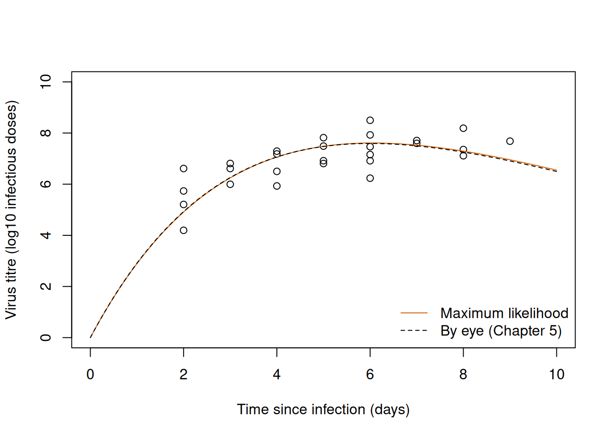
1.1.3 Question 3
The time and the height of the peak are quantities calculated from the parameters, so we ask for their standard errors with ADREPORT() inside the NLL, as in Uncertainty of the fitted curve. We also mark the titres with OBS(), which question 4 needs in order to simulate. We process the new NLL and fit it again (the estimates do not change):
# The NLL with the time and the height of the peak in ADREPORT(), and the titres marked
# as observations for the simulations of question 4.
normal_nll = function(parms, data) {
getAll(parms, data)
titre = OBS(titre)
a = exp(log_a)
b = exp(log_b)
sigma = exp(log_sigma)
# Time (days) and height (units of titre) of the peak of the curve.
peak_time = 1 / b
peak_titre = a / (b * exp(1))
ADREPORT(peak_time)
ADREPORT(peak_titre)
mu = a * day * exp(-b * day)
-sum(dnorm(x = titre, mean = mu, sd = sigma, log = TRUE))
}
# Process the new NLL and fit it again.
normal_obj = MakeADFun(cmb(normal_nll, titre_data), titre_start, silent = TRUE)
normal_fit = optim(
par = normal_obj$par,
fn = normal_obj$fn,
gr = normal_obj$gr,
method = "BFGS"
)
normal_fit$convergence[1] 0summary() of the result of sdreport() has one row for each parameter, on the scale that was optimised, and one row for each quantity in ADREPORT(), on the scale on which it was calculated.:
# Standard errors of the parameters (log scale) and of the two quantities of the peak.
normal_sd = sdreport(normal_obj)
summary(normal_sd) Estimate Std. Error
log_a 1.2291040 0.05942752
log_b -1.8004320 0.06327389
log_sigma -0.4004604 0.13607803
peak_time 6.0522616 0.38295013
peak_titre 7.6105545 0.15035055The standard errors on the log scale are about 0.06 for \(\log(\hat a)\) and \(\log(\hat b)\), so both parameters are estimated to within a few percent, and 0.14 for \(\log(\hat\sigma)\).
We asked for the time and the height of the peak on their original scale, in days and in units of titre, so their Wald intervals are calculated on that scale:
# 95% Wald intervals of the time and the height of the peak, on the original scale.
critical_value = qnorm(p = 0.975)
peak_summary = summary(normal_sd, select = "report")
cbind(
estimate = peak_summary[, "Estimate"],
lower = peak_summary[, "Estimate"] - critical_value * peak_summary[, "Std. Error"],
upper = peak_summary[, "Estimate"] + critical_value * peak_summary[, "Std. Error"]
) estimate lower upper
peak_time 6.052262 5.301693 6.802830
peak_titre 7.610554 7.315873 7.905236The peak is estimated on day 6.05 (95% Wald interval from 5.30 to 6.80 days) at a titre of 7.61 (from 7.32 to 7.91).
For the likelihood profile interval we profile \(\log(b)\), transform the endpoints back with exp(), and obtain the interval for the time of the peak from that of \(b\). The function \(1/b\) decreases as \(b\) increases, so the endpoints swap, which rev() does by reversing the order of the two endpoints:
# Profile of log(b). The profile contains the estimate twice, so confint() warns that it
# collapses repeated values; the warning can be ignored.
normal_profile_b = TMB::tmbprofile(normal_obj, name = "log_b", trace = FALSE)
# 95% interval for b (1/day), and for the time of the peak (days).
b_interval = exp(confint(normal_profile_b))
b_interval lower upper
log_b 0.1439547 0.1864634rev(1 / b_interval)[1] 5.362984 6.946631The likelihood profile interval of \(b\) goes from 0.144/day to 0.186/day, almost symmetrically around the estimate of 0.165. The corresponding interval for the time of the peak goes from 5.36 to 6.95 days: it extends 0.69 days below the estimate and 0.89 days above it. The Wald interval for the time of the peak (5.30 to 6.80 days) is symmetric by construction. So, compared with the profile interval, it is shifted towards earlier days. The two intervals differ by less than a fifth of a day at each end, which is small compared with their width.
1.1.4 Question 4
The titres are marked with OBS(), so the function simulate() of the object draws one hypothetical sample of 27 titres, on the same days as the data, for the parameter values that we give it. We store 1,000 hypothetical samples in a matrix with one row per observation:
# 1,000 hypothetical samples of the 27 titres at the estimates: one row per observation
# and one column per hypothetical sample.
n_sim = 1000
normal_simulations = matrix(NA, nrow = length(titre_data$titre), ncol = n_sim)
set.seed(seed = 611)
for (j in seq_len(n_sim)) {
normal_simulations[, j] = normal_obj$simulate(normal_fit$par)$titre
}DHARMa::createDHARMa() calculates the residuals from the simulations, with the arguments of the theory. The expected value of each observation is the mean titre of its day, and the titres are continuous, so integerResponse = FALSE: two titres are almost never equal, and no ties need to be drawn at random. plot() draws the two standard panels (Figure 2), and DHARMa::plotResiduals() with the argument form draws the residuals against the day (Figure 3):
# Expected titre of each observation under the fitted model.
normal_expected = ricker(titre_data$day, a = a_mle, b = b_mle)
# Scaled quantile residuals from the simulations, and the two standard panels.
normal_residuals = DHARMa::createDHARMa(
simulatedResponse = normal_simulations,
observedResponse = titre_data$titre,
fittedPredictedResponse = normal_expected,
integerResponse = FALSE
)
plot(normal_residuals)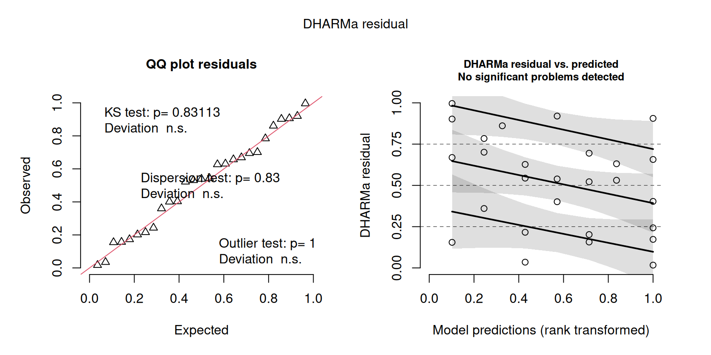
# Residuals against the day of the observation.
DHARMa::plotResiduals(normal_residuals, form = titre_data$day)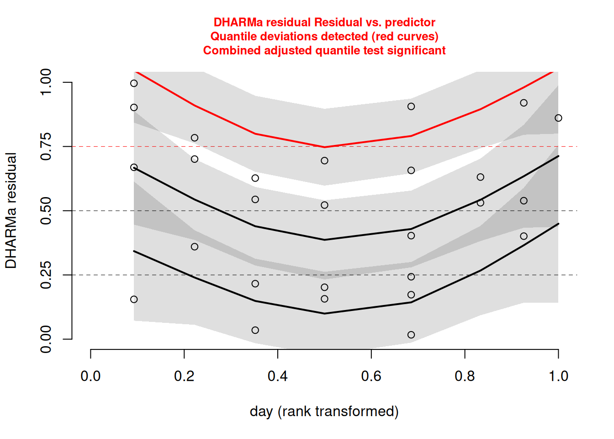
In the quantile–quantile plot the residuals follow the line, so their distribution is close to uniform, and none lies outside the range of its simulations. The right panel of Figure 2 orders the observations by their expected titre, which first increases and then decreases with the day, so the pattern in time is clearer in Figure 3. There the residuals tend to lie above 0.5 on the first days and on the last days, and below 0.5 around the peak: the observations lie slightly above the curve at both ends and slightly below it in the middle. This agrees with what we saw by eye in Chapter 5: the titre levels off after day 6, while the Ricker curve must decline after its peak. In Figure 3 DHARMa draws the line of the upper quartile in red, because its test gives a small p-value. As in the theory, we read the plot as exploratory evidence and not as a decision: with 27 observations and one to six per day the pattern rests on few observations, but it suggests that the Ricker curve describes the titre after the peak only approximately.
1.1.5 Question 5
The Gamma model of the titre has the Ricker curve as its mean \(\mu\) on each day and a shape \(k\) that is the same for every observation. Its variance is \(\mu^2/k\), so its standard deviation is \(\mu/\sqrt{k}\): the spread of the titres is proportional to the mean, with a coefficient of variation \(1/\sqrt{k}\) that is the same on every day. In the Normal model the spread is the same on every day, whatever the mean. dgamma() does not take the mean but a shape and a scale, and a scale of \(\mu/k\) gives the distribution the mean \(\mu\), because the mean of a Gamma distribution is the product of its shape and its scale. The NLL takes the logarithm of the shape as its third parameter; we start from the values by eye and a shape of 10:
# Negative log-likelihood of the Ricker curve with a Gamma observation model.
gamma_nll = function(parms, data) {
getAll(parms, data)
a = exp(log_a)
b = exp(log_b)
shape = exp(log_shape)
mu = a * day * exp(-b * day)
# A scale of mu / shape gives each observation the mean mu.
-sum(dgamma(x = titre, shape = shape, scale = mu / shape, log = TRUE))
}
# Process the NLL and fit it.
gamma_obj = MakeADFun(
cmb(gamma_nll, titre_data),
list(log_a = log(3.44), log_b = log(1 / 6), log_shape = log(10)),
silent = TRUE
)
gamma_fit = optim(
par = gamma_obj$par,
fn = gamma_obj$fn,
gr = gamma_obj$gr,
method = "BFGS"
)
gamma_fit$convergence[1] 0# Estimates on the original scale.
c(a = exp(gamma_fit$par[["log_a"]]), b = exp(gamma_fit$par[["log_b"]]),
shape = exp(gamma_fit$par[["log_shape"]])) a b shape
3.5612471 0.1713291 90.5119351 The fit converged, with \(\hat a\approx3.56\) units of titre/day, \(\hat b\approx0.171\)/day and a shape of about 90, which gives a coefficient of variation of about 0.11 (a standard deviation of about 0.8 units of titre at the peak and 0.5 on day 2). Both models have three parameters and are fitted to the same 27 titres in the same units, so we can compare them with the criteria of the theory, with \(n=27\):
# AIC, AICc and BIC of the two models, with K = 3 parameters and n = 27 observations.
n_obs = length(titre_data$titre)
k_models = c(normal = 3, gamma = 3)
nll_models = c(normal = normal_fit$value, gamma = gamma_fit$value)
aic = 2 * k_models + 2 * nll_models
aicc = aic + 2 * k_models * (k_models + 1) / (n_obs - k_models - 1)
bic = k_models * log(n_obs) + 2 * nll_models
rbind(aic = aic, aicc = aicc, bic = bic) normal gamma
aic 60.99968 65.01829
aicc 62.04316 66.06176
bic 64.88719 68.90580All three criteria prefer the Normal model, by 4.0 units. The difference is the same for the three criteria because the two models have the same number of parameters and are fitted to the same observations: the penalty is the same for both models within each criterion, and the difference between the models is twice the difference between their maximum log-likelihoods. So the comparison says that the titres are more probable under a spread that is the same on every day than under a spread that grows with the mean.
2 Exercise 2: Enzyme kinetics
The data set Puromycin of base R contains the rate of an enzymatic reaction (rate, in counts/min/min) at six concentrations of the substrate (conc, in parts per million, ppm), measured in cells that were treated with the antibiotic puromycin (12 observations) and in untreated cells (11 observations) (Treloar 1974, in Bates and Watts 1988). The column state says to which of the two groups an observation belongs. Load the data with data(Puromycin, package = "datasets").
In Exercise 6 of the Chapter 5 practical we placed a Michaelis–Menten curve, \(f(x)=ax/(b+x)\), by eye over the observations of each state: \(a=210\) counts/min/min for the treated cells and \(a=165\) counts/min/min for the untreated cells, with \(b=0.06\) ppm for both. By eye, the states differed in the asymptote and not in the half-maximum. In this exercise we fit and compare two models with a Normal observation model with a constant standard deviation \(\sigma\), and treat the 23 observations as independent.
- Write the model with one Michaelis–Menten curve for both states, with the units of \(a\), \(b\) and \(\sigma\). Fit it, reading the starting values of \(a\) and \(b\) from a plot of the data as in the Chapter 5 practical, check the convergence, and draw the curve over the data with a different symbol for each state. Hint: the list of data holds the predictor and the response, as in Fitting a response curve by maximum likelihood. In
plot(), the argumentpch = ifelse(Puromycin$state == "treated", 16, 1)draws the treated cells as filled circles and the untreated cells as open circles. - Fit a model in which each state has its own asymptote \(a\), with a common \(b\) and \(\sigma\). Use an index vector with the number of the state of each observation, as in question 6 of Exercise 1 of the Chapter 4 practical. Draw both curves over the data. How does the estimate of \(\sigma\) change, and why? Hint:
as.numeric()of the factorstategives the index vector. Iflog_astarts as a vector of two values,a[state]inside the NLL is the asymptote of each observation, and the first two elements of theparof the fit are the two values oflog_a. - Ask for the difference between the two asymptotes with
ADREPORT(), and calculate a 95% Wald interval for it. On which scale do you calculate the interval, and why? What does the treatment with puromycin do to the maximum rate of the reaction? Hint: the difference is calculated inside the NLL, as the difference between two probabilities in that question of the Chapter 4 practical; for the scale, see Uncertainty of the fitted curve. - Calculate the likelihood profile interval of \(b\) in the model of question 2 and compare it with the Wald interval from the log scale. Why do the two intervals agree so much better than those for the handling time of the reed frogs in the theory? Hint: compare the range of the concentrations with the estimated half-maximum, and recall where the densities of the reed frog tanks stopped (“Standard errors and correlation of the parameters” and “Likelihood profile intervals of the parameters” in Uncertainty of a response curve).
- Compare the two models with AIC, AICc and BIC. Do the criteria agree? Hint: see “Information criteria” in Comparing candidate models.
- Simulate 1,000 hypothetical samples from the model that the criteria prefer, calculate the scaled quantile residuals with DHARMa, and plot them, also against the concentration of the substrate. What do you see, and what can you conclude from 23 observations? Hint: proceed as in question 4 of Exercise 1 (the rates must be marked with
OBS()in the NLL); the expected rate of an observation is the curve of its state at its concentration.
2.1 Solution
2.1.1 Question 1
Let \(Y_i\) be the rate of the reaction in observation \(i\) and \(x_i\) the concentration of the substrate. With one curve for both states, the model is
\[ Y_i \sim \operatorname{Normal}\left(f(x_i),\,\sigma^2\right), \qquad f(x)=\frac{ax}{b+x}, \qquad i=1,\ldots,23, \]
where \(a\) is the asymptote, the maximum rate of the reaction (counts/min/min), \(b\) is the half-maximum, the concentration at which the rate is \(a/2\) (ppm), and \(\sigma\) is the standard deviation of the rates around the curve (counts/min/min). The mean of a Normal distribution can take any value, and the curve is positive anyway for positive \(a\) and \(b\). All three parameters are positive, so we optimise their logarithms.
To avoid too much repetition, I am adding all the elements to the NLL function that are needed across the different sub-questions, even if they are not needed for the first one. The list of data holds the concentration, the rate and the number of the state of each observation, which question 2 needs. as.numeric() of a factor returns the position of each level, so 1 is a treated cell and 2 an untreated cell. Question 6 checks the model that the criteria prefer, which we do not know yet, so we mark the rates with OBS() in both NLLs:
# Load the data and put the concentration (ppm), the rate (counts/min/min) and the number
# of the state of each observation (1 treated, 2 untreated) in a list of data.
data(Puromycin, package = "datasets")
levels(Puromycin$state)[1] "treated" "untreated"enzyme_data = list(
conc = Puromycin$conc,
rate = Puromycin$rate,
state = as.numeric(Puromycin$state)
)
# Negative log-likelihood of one Michaelis–Menten curve for both states.
pooled_nll = function(parms, data) {
getAll(parms, data)
rate = OBS(rate)
a = exp(log_a)
b = exp(log_b)
sigma = exp(log_sigma)
mu = a * conc / (b + conc)
-sum(dnorm(x = rate, mean = mu, sd = sigma, log = TRUE))
}As in Chapter 5, we read the starting values from a plot of the data (Figure 4 shows it below): an asymptote of 190 counts/min/min, between the plateaus of the two states, a half-maximum of 0.06 ppm, and a standard deviation of 10 counts/min/min:
# Starting values, process the NLL and fit it.
pooled_start = list(log_a = log(190), log_b = log(0.06), log_sigma = log(10))
pooled_obj = MakeADFun(cmb(pooled_nll, enzyme_data), pooled_start, silent = TRUE)
pooled_fit = optim(
par = pooled_obj$par,
fn = pooled_obj$fn,
gr = pooled_obj$gr,
method = "BFGS"
)
pooled_fit$convergence[1] 0# Estimates on the original scale: a and sigma in counts/min/min, b in ppm.
c(a = exp(pooled_fit$par[["log_a"]]), b = exp(pooled_fit$par[["log_b"]]),
sigma = exp(pooled_fit$par[["log_sigma"]])) a b sigma
190.80642383 0.06038898 17.78683790 The fit converged, with \(\hat a\approx191\) counts/min/min, \(\hat b\approx0.060\) ppm and \(\hat\sigma\approx17.8\) counts/min/min. We draw the curve over the data (Figure 4):
# Michaelis–Menten function: asymptote a and half-maximum b.
michaelis_menten = function(x, a = 1, b = 1) {
a * x / (b + x)
}
# Observations, with a filled symbol for the treated cells, and the fitted curve.
plot(rate ~ conc, data = Puromycin,
pch = ifelse(Puromycin$state == "treated", 16, 1),
xlab = "Concentration of substrate (ppm)", ylab = "Rate (counts/min/min)")
curve(michaelis_menten(x, a = exp(pooled_fit$par[["log_a"]]),
b = exp(pooled_fit$par[["log_b"]])),
add = TRUE, col = "#D55E00")
legend("bottomright", legend = c("treated", "untreated"), pch = c(16, 1), bty = "n")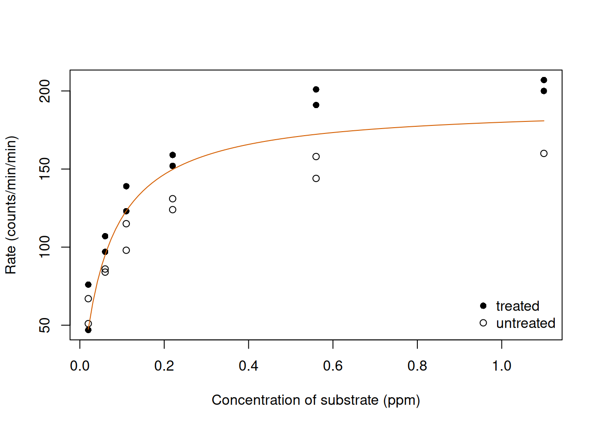
2.1.2 Question 2
In the second model the parameter log_a is a vector with the logarithms of the two asymptotes, and a[state] selects the asymptote of the state of each observation. The NLL also asks for the difference between the two asymptotes with ADREPORT(), which we use in question 3. We start from the two asymptotes read by eye:
# Negative log-likelihood with one asymptote for each state and a common b and sigma.
state_nll = function(parms, data) {
getAll(parms, data)
rate = OBS(rate)
a = exp(log_a)
b = exp(log_b)
sigma = exp(log_sigma)
# Difference between the asymptotes of the treated and the untreated cells.
difference = a[1] - a[2]
ADREPORT(difference)
# a[state] is the asymptote of the state of each observation.
mu = a[state] * conc / (b + conc)
-sum(dnorm(x = rate, mean = mu, sd = sigma, log = TRUE))
}
# Starting values: the asymptotes read by eye (treated, untreated), b and sigma as before.
state_start = list(log_a = log(c(210, 165)), log_b = log(0.06), log_sigma = log(10))
state_obj = MakeADFun(cmb(state_nll, enzyme_data), state_start, silent = TRUE)
state_fit = optim(
par = state_obj$par,
fn = state_obj$fn,
gr = state_obj$gr,
method = "BFGS"
)
state_fit$convergence[1] 0# Estimates on the original scale. The first two elements of par are the two values of
# log_a (treated, untreated); unname() drops their names.
a_state = unname(exp(state_fit$par[1:2]))
b_state = exp(state_fit$par[["log_b"]])
sigma_state = exp(state_fit$par[["log_sigma"]])
c(a_treated = a_state[1], a_untreated = a_state[2], b = b_state, sigma = sigma_state) a_treated a_untreated b sigma
208.63009736 166.60417627 0.05797186 9.87065784 The fit converged. The asymptote is about 209 counts/min/min for the treated cells and 167 for the untreated cells, the half-maximum is 0.058 ppm, and \(\hat\sigma\) has fallen from 17.8 to 9.9 counts/min/min (Figure 5). With one curve for both states, the difference between the states is part of the spread of the rates around the curve. With one asymptote for each state the curves describe that difference, and the spread that remains is about half as large.
# Observations and one fitted curve for each state.
plot(rate ~ conc, data = Puromycin,
pch = ifelse(Puromycin$state == "treated", 16, 1),
xlab = "Concentration of substrate (ppm)", ylab = "Rate (counts/min/min)")
curve(michaelis_menten(x, a = a_state[1], b = b_state), add = TRUE, lty = 1, col = "#D55E00")
curve(michaelis_menten(x, a = a_state[2], b = b_state), add = TRUE, lty = 2, col = "#D55E00")
legend("bottomright", legend = c("treated", "untreated"),
pch = c(16, 1), lty = c(1, 2), bty = "n")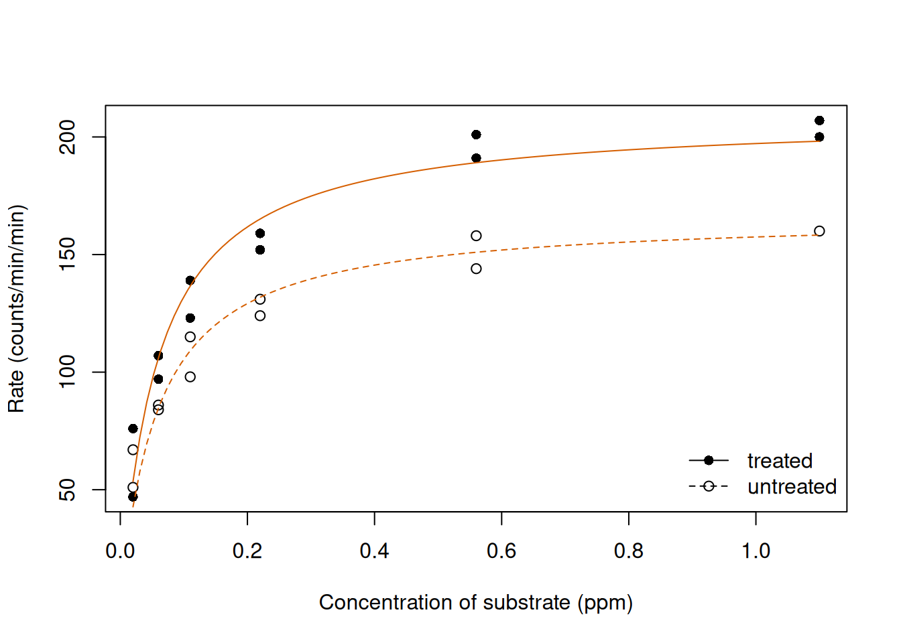
2.1.3 Question 3
The row difference of the summary of sdreport() holds the estimate and the standard error of the difference. A difference between two asymptotes can be positive or negative and has no bound, so we calculate the Wald interval on the original scale, as for the difference between two probabilities in the Chapter 4 practical:
# Standard errors, and the 95% Wald interval of the difference between the asymptotes.
state_sd = sdreport(state_obj)
state_summary = summary(state_sd)
state_summary Estimate Std. Error
log_a 5.340563 0.02687868
log_a 5.115621 0.03300880
log_b -2.847798 0.10104611
log_sigma 2.289567 0.14744177
difference 42.025921 5.85998423state_summary["difference", "Estimate"] +
c(-1, 1) * critical_value * state_summary["difference", "Std. Error"][1] 30.54056 53.51128The asymptote of the treated cells is higher by 42 counts/min/min, with a 95% Wald interval from 31 to 54 counts/min/min. So in this model the treatment with puromycin raises the maximum rate of the reaction by about a quarter (\(208.6/166.6\approx1.25\)).
2.1.4 Question 4
We profile \(\log(b)\) and transform the endpoints back with exp(), and we calculate the Wald interval from the row log_b, on the log scale, with its endpoints transformed back:
# Profile of log(b) and its 95% interval, transformed back (ppm). confint() warns about
# repeated values, as in Exercise 1.
state_profile_b = TMB::tmbprofile(state_obj, name = "log_b", trace = FALSE)
exp(confint(state_profile_b)) lower upper
log_b 0.04693476 0.07100063# Wald interval of b (ppm): calculated on the log scale, endpoints transformed back.
exp(state_summary["log_b", "Estimate"] +
c(-1, 1) * critical_value * state_summary["log_b", "Std. Error"])[1] 0.04755614 0.07066882The likelihood profile interval goes from 0.047 to 0.071 ppm and the Wald interval from 0.048 to 0.071 ppm: their endpoints differ by less than 0.001 ppm. The difference from the reed frogs is in the design. The concentrations of the experiment go from 0.02 to 1.1 ppm, about 19 times the half-maximum, so the observations cover the rise of the curve and also the part where it levels off. Both parameters are then well determined, and the log-likelihood is close to a parabola on the log scale, which is the approximation behind the Wald interval. In the reed frog experiment the densities stopped below the half-maximum, so the tanks said little about the asymptote, and the profile of the handling time was strongly asymmetric.
2.1.5 Question 5
The first model has \(K=3\) parameters and the second \(K=4\), and both are fitted to the same 23 observations, so \(n=23\) in AICc and BIC:
# AIC, AICc and BIC of the two models, with n = 23 observations.
n_enzyme = length(enzyme_data$rate)
k_enzyme = c(pooled = 3, state = 4)
nll_enzyme = c(pooled = pooled_fit$value, state = state_fit$value)
aic_enzyme = 2 * k_enzyme + 2 * nll_enzyme
aicc_enzyme = aic_enzyme + 2 * k_enzyme * (k_enzyme + 1) / (n_enzyme - k_enzyme - 1)
bic_enzyme = k_enzyme * log(n_enzyme) + 2 * nll_enzyme
rbind(aic = aic_enzyme, aicc = aicc_enzyme, bic = bic_enzyme) pooled state
aic 203.6803 178.5913
aicc 204.9434 180.8135
bic 207.0868 183.1333Every criterion prefers the model with one asymptote for each state, by 25.1 units of AIC, 24.1 of AICc and 24.0 of BIC. The criteria agree, and by a wide margin: the extra parameter improves the fit far more than any of the penalties.
2.1.6 Question 6
We simulate from the model with one asymptote for each state, as in Exercise 1 (the rates were marked with OBS() in question 1). The expected rate of each observation is the curve of its state at its concentration, and the rates are continuous, so integerResponse = FALSE:
# 1,000 hypothetical samples of the 23 rates at the estimates.
state_simulations = matrix(NA, nrow = n_enzyme, ncol = n_sim)
set.seed(seed = 621)
for (j in seq_len(n_sim)) {
state_simulations[, j] = state_obj$simulate(state_fit$par)$rate
}
# Expected rate of each observation, and the scaled quantile residuals.
state_expected = michaelis_menten(enzyme_data$conc, a = a_state[enzyme_data$state],
b = b_state)
state_residuals = DHARMa::createDHARMa(
simulatedResponse = state_simulations,
observedResponse = enzyme_data$rate,
fittedPredictedResponse = state_expected,
integerResponse = FALSE
)
# The two standard panels.
plot(state_residuals)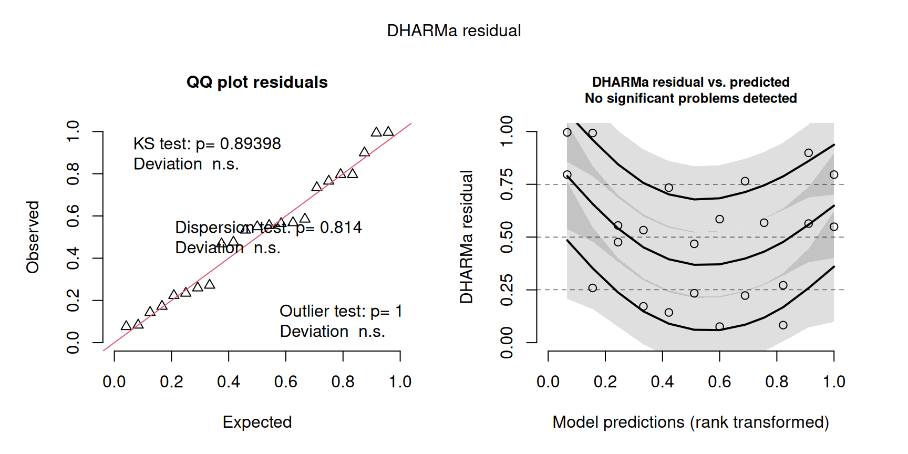
The residuals against the concentration of the substrate come from DHARMa::plotResiduals() with the argument form:
# Residuals against the concentration of the substrate.
DHARMa::plotResiduals(state_residuals, form = enzyme_data$conc)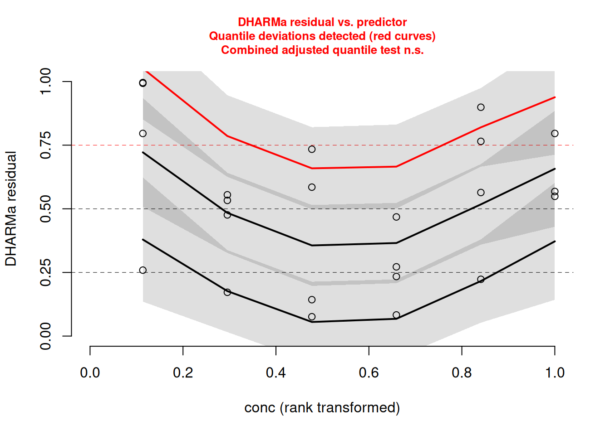
The quantile–quantile plot follows the line, so the residuals as a whole are close to uniform. Against the concentration they show a pattern: they tend to lie above 0.5 at the lowest concentration and at the two highest, and below 0.5 at the intermediate concentrations. That is, the observed rates lie above the curves at both ends and below them in the middle, as if the rate bent towards its maximum more gradually than a Michaelis–Menten curve can. However, there are only three or four observations at each concentration, and a pattern of this size can arise by chance with 23 observations (DHARMa draws one quartile in red, but its combined test does not flag the pattern), so the plot is a hint and not a conclusion.
3 Exercise 3: Fecundity of fir trees
The data set FirDBHFec_sum in the package emdbook contains the diameter at breast height (DBH, in cm) and the fecundity (fecundity) of 333 balsam fir trees (Abies balsamea) on Whiteface Mountain, New York (Silvertown and Dodd 1999; Dodd and Silvertown 2000). Fecundity was measured as the number of cone rachises on a tree: the rachis is the axis of a cone, which stays on the branch after the cone has fallen apart. Load the data with data(FirDBHFec_sum, package = "emdbook").
In Exercise 7 of the Chapter 5 practical we described the mean fecundity with a power law, \(\mu(x)=ax^b\), where \(x\) is the diameter, and read \(a=0.5\) and \(b=2\) from two points of the cloud. The trees come from two populations (the column pop). We do not model this grouping: we treat the trees as independent observations of one curve, which is a simplification (Chapter 7 deals with observations that come in groups).
- As in Exercise 7 of the Chapter 5 practical, remove the trees with a missing diameter, and check that no fecundity is missing. Why can a missing value not be replaced by zero? Some fecundities are not whole numbers: find them and decide what to do with them before you fit a model for counts. Hint:
x != round(x)isTRUEfor the elements ofxthat are not whole numbers. Rounding them and removing those trees are both defensible; say which you choose and why. - Write a Poisson model whose mean follows the power law, with the units of \(a\). Fit it from the values read by eye in the Chapter 5 practical, and check it with scaled quantile residuals from DHARMa and the dispersion statistic. Hint: the mean must be positive, but the exponent \(b\) can take any real value, so only \(a\) needs a transformation (see From a response curve to a model for observations). For the residuals, follow Checking the fitted model: the counts are whole numbers, as the numbers killed of the reed frogs were.
- Fit a Negative Binomial model with the same curve, with
dnbinom2()of RTMBdist (mean and shape \(k\)). Check its residuals, and draw the curves of both models over the data. Hint:dnbinom2()takes the mean inmuand the shape, which is positive, insize. - Compare the two models with AIC, AICc and BIC. Hint: \(n\) is the number of trees (see “Information criteria” in Comparing candidate models).
- For the model that the criteria prefer, calculate the likelihood profile interval of the exponent \(b\), and from it an interval for the factor \(2^b\) by which the mean fecundity changes when the diameter doubles. Do the data support a fecundity proportional to the cross-sectional area of the trunk (\(b=2\))? Hint: see “Likelihood profile intervals of the parameters” in Uncertainty of a response curve for transforming the endpoints of an interval; \(2^b\) increases with \(b\).
- For the same model, calculate the mean fecundity on a grid of diameters from 3 to 18 cm with
ADREPORT(), and its pointwise 95% confidence band from Wald intervals on the log scale. Draw the curve and its band over the data. Where along the diameters is the curve best determined, and why? Hint: follow Uncertainty of the fitted curve, with the logarithm of the mean in place of the logit of the probability;lines()adds the curve and the two limits of the band to the plot.
3.1 Solution
3.1.1 Question 1
We count the missing values in each column with is.na(), keep the trees for which both are known, and look for fecundities that are not whole numbers:
# Load the fir data and count the missing diameters and fecundities.
data(FirDBHFec_sum, package = "emdbook")
nrow(FirDBHFec_sum)[1] 333colSums(is.na(FirDBHFec_sum[, c("DBH", "fecundity")])) DBH fecundity
22 0 # Keep the trees with both a diameter and a fecundity.
complete = !is.na(FirDBHFec_sum$DBH) & !is.na(FirDBHFec_sum$fecundity)
fir = FirDBHFec_sum[complete, ]
nrow(fir)[1] 311# Fecundities that are not whole numbers.
fir$fecundity[fir$fecundity != round(fir$fecundity)][1] 206.5 63.5 107.5 129.5 227.7 114.5The diameter is missing for 22 trees and the fecundity for none, so 311 trees remain. A missing value means that the quantity was not recorded. Replacing it by zero would add observations that were never made (a tree with a diameter of zero, or without any cones) and would pull the curve towards them.
Six fecundities are not whole numbers, for example 206.5. The help page does not explain them, but in the full data set FirDBHFec of the same package the yearly counts of these six trees include fractions (such as 32.5 cones in one year). The Poisson and Negative Binomial distributions describe whole numbers, so we round the six values to the nearest whole number, which changes each of them by at most half a rachis (removing the six trees would be the alternative, at the cost of six observations). The list of data holds the diameter (cm) and the number of rachises:
# Diameter (cm) and fecundity, rounded to whole numbers of rachises.
fir_data = list(dbh = fir$DBH, cones = round(fir$fecundity))3.1.2 Question 2
Let \(Y_i\) be the number of rachises of tree \(i\) and \(x_i\) its diameter. The model is
\[ Y_i \sim \operatorname{Poisson}\left(\mu(x_i)\right), \qquad \mu(x)=a\,x^b, \qquad i=1,\ldots,311. \]
The mean of a Poisson distribution must be positive, and the power law is positive for any \(b\) when \(a\) and \(x\) are positive, so we optimise \(\log(a)\) and leave the exponent \(b\) untransformed: it can take any real value. The units of \(a\) follow from the curve: \(ax^b\) is a number of rachises and \(x^b\) is in cm\(^b\), so \(a\) is in rachises/cm\(^b\), units that depend on the estimate of the exponent (rachises/cm² for \(b=2\)). This makes \(a\) hard to interpret on its own, and we will interpret \(b\) and quantities calculated from it. We mark the counts with OBS() for the residuals and start from the values read by eye:
# Negative log-likelihood of the power law with a Poisson observation model.
poisson_nll = function(parms, data) {
getAll(parms, data)
cones = OBS(cones)
a = exp(log_a)
# Mean number of rachises of a tree of each diameter.
mu = a * dbh^b
-sum(dpois(x = cones, lambda = mu, log = TRUE))
}
# Process the NLL from the values read by eye in the Chapter 5 practical, and fit it.
poisson_obj = MakeADFun(
cmb(poisson_nll, fir_data),
list(log_a = log(0.5), b = 2),
silent = TRUE
)
poisson_fit = optim(
par = poisson_obj$par,
fn = poisson_obj$fn,
gr = poisson_obj$gr,
method = "BFGS"
)
poisson_fit$convergence[1] 0c(a = exp(poisson_fit$par[["log_a"]]), b = poisson_fit$par[["b"]]) a b
0.6826788 1.9775730 The fit converged, with \(\hat b\approx1.98\), close to the exponent of 2 read by eye. We simulate 1,000 hypothetical samples of the 311 trees and calculate the residuals. The counts are whole numbers, so integerResponse = TRUE. We also calculate the dispersion statistic:
# Power law: a is the value at x = 1 and b is the exponent.
power_law = function(x, a = 1, b = 1) {
a * x^b
}
# 1,000 hypothetical samples of the 311 trees at the estimates.
n_trees = length(fir_data$cones)
poisson_simulations = matrix(NA, nrow = n_trees, ncol = n_sim)
set.seed(seed = 631)
for (j in seq_len(n_sim)) {
poisson_simulations[, j] = poisson_obj$simulate(poisson_fit$par)$cones
}
# Scaled quantile residuals and the two standard panels.
poisson_residuals = DHARMa::createDHARMa(
simulatedResponse = poisson_simulations,
observedResponse = fir_data$cones,
fittedPredictedResponse = power_law(fir_data$dbh, a = exp(poisson_fit$par[["log_a"]]),
b = poisson_fit$par[["b"]]),
integerResponse = TRUE
)
plot(poisson_residuals)
# Dispersion statistic.
DHARMa::testDispersion(poisson_residuals, plot = FALSE)$statisticdispersion
22.90786 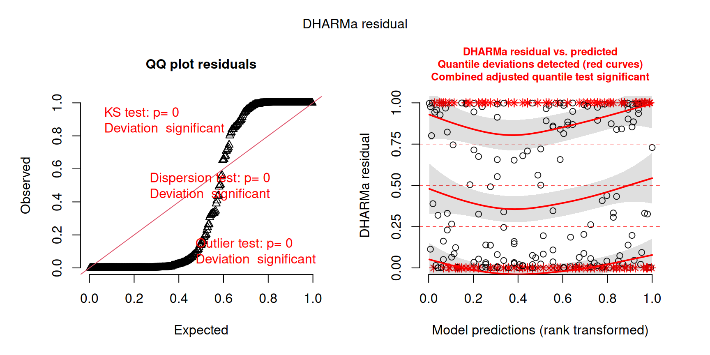
The Poisson model does not describe these data. The residuals are far from uniform: most of them are close to 0 or 1, and the stars mark the trees whose counts lie outside the range of all their 1,000 simulated values. The dispersion statistic is about 23, so the counts vary around the curve about 23 times as much (as a variance) as the Poisson distribution allows. Trees of the same diameter differ in fecundity for many reasons that the curve does not contain, and the Poisson model, whose variance equals its mean, leaves no room for them.
3.1.3 Question 3
The Negative Binomial model keeps the curve for the mean and adds the shape \(k\), which is positive, so we optimise \(\log(k)\). dnbinom2() of RTMBdist takes the mean in mu and the shape in size. We start from the values by eye and a shape of 1:
# Negative log-likelihood of the power law with a Negative Binomial observation model.
nbinom_nll = function(parms, data) {
getAll(parms, data)
cones = OBS(cones)
a = exp(log_a)
k = exp(log_k)
mu = a * dbh^b
-sum(dnbinom2(x = cones, mu = mu, size = k, log = TRUE))
}
# Process the NLL from the values read by eye and a shape of 1, and fit it.
nbinom_obj = MakeADFun(
cmb(nbinom_nll, fir_data),
list(log_a = log(0.5), b = 2, log_k = log(1)),
silent = TRUE
)
nbinom_fit = optim(
par = nbinom_obj$par,
fn = nbinom_obj$fn,
gr = nbinom_obj$gr,
method = "BFGS"
)
nbinom_fit$convergence[1] 0c(a = exp(nbinom_fit$par[["log_a"]]), b = nbinom_fit$par[["b"]],
k = exp(nbinom_fit$par[["log_k"]])) a b k
0.9966442 1.8014395 1.8386925 The fit converged, with \(\hat b\approx1.80\) and \(\hat k\approx1.84\). We check the residuals as for the Poisson model:
# 1,000 hypothetical samples of the 311 trees at the estimates.
nbinom_simulations = matrix(NA, nrow = n_trees, ncol = n_sim)
set.seed(seed = 632)
for (j in seq_len(n_sim)) {
nbinom_simulations[, j] = nbinom_obj$simulate(nbinom_fit$par)$cones
}
# Scaled quantile residuals, the two standard panels and the dispersion statistic.
nbinom_residuals = DHARMa::createDHARMa(
simulatedResponse = nbinom_simulations,
observedResponse = fir_data$cones,
fittedPredictedResponse = power_law(fir_data$dbh, a = exp(nbinom_fit$par[["log_a"]]),
b = nbinom_fit$par[["b"]]),
integerResponse = TRUE
)
plot(nbinom_residuals)
DHARMa::testDispersion(nbinom_residuals, plot = FALSE)$statisticdispersion
0.6573872 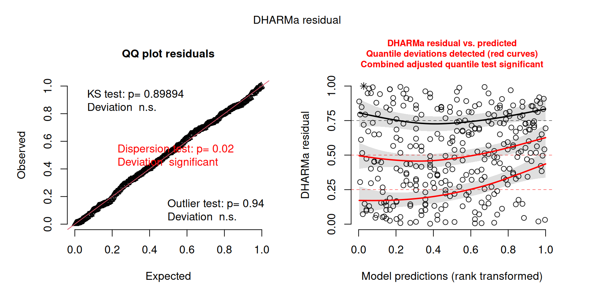
The Negative Binomial model describes the variation among trees far better. The quantile–quantile plot follows the line, and only one tree (the star) lies outside the range of its simulations. A smaller disagreement remains. The dispersion statistic is below one, so the counts vary around the curve somewhat less than the model allows, and in the right panel the lower quartile of the residuals rises from below 0.25 for the trees with the smallest expected fecundity to above 0.25 for the largest: large trees seldom have the very low counts that the model expects for some of them. Under a Negative Binomial model with one shape the variance, \(\mu+\mu^2/k\), grows with the square of the mean, and the residuals suggest that the variation among the largest trees grows less than that.
Both curves are drawn over the data in Figure 8:
# Observations and the two fitted curves.
plot(fecundity ~ DBH, data = fir,
xlab = "Diameter at breast height (cm)", ylab = "Fecundity (cone rachises)")
curve(power_law(x, a = exp(nbinom_fit$par[["log_a"]]), b = nbinom_fit$par[["b"]]),
add = TRUE, lty = 1, col = "#D55E00")
curve(power_law(x, a = exp(poisson_fit$par[["log_a"]]), b = poisson_fit$par[["b"]]),
add = TRUE, lty = 2)
legend("topleft", legend = c("Negative Binomial", "Poisson"),
lty = c(1, 2), col = c("#D55E00", "black"), bty = "n")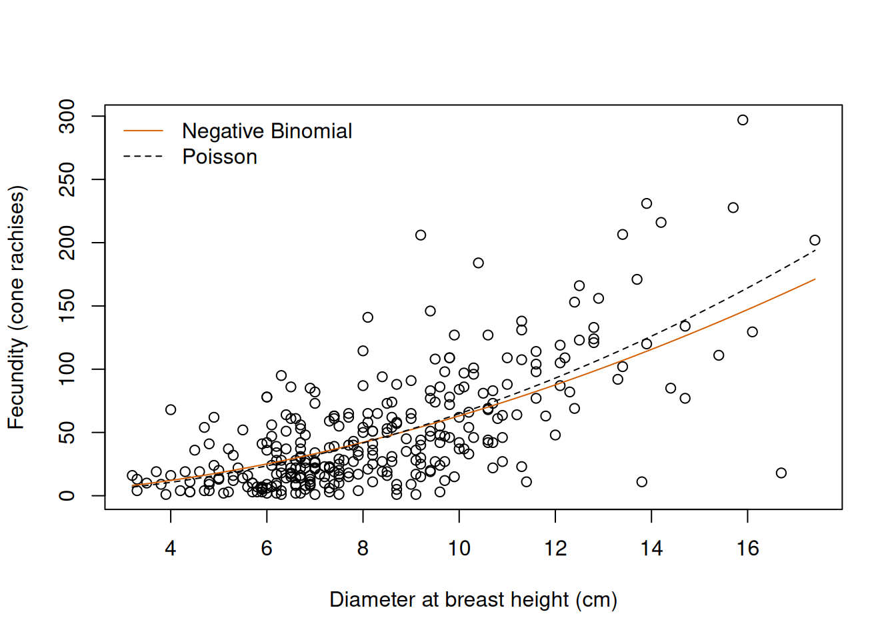
The two curves are almost the same for trees up to about 10 cm, and above that the Negative Binomial curve lies below the Poisson curve.
3.1.4 Question 4
The Poisson model has \(K=2\) parameters and the Negative Binomial model \(K=3\), and \(n\) is the number of trees, 311:
# AIC, AICc and BIC of the two models, with n = 311 trees.
k_fir = c(poisson = 2, nbinom = 3)
nll_fir = c(poisson = poisson_fit$value, nbinom = nbinom_fit$value)
aic_fir = 2 * k_fir + 2 * nll_fir
aicc_fir = aic_fir + 2 * k_fir * (k_fir + 1) / (n_trees - k_fir - 1)
bic_fir = k_fir * log(n_trees) + 2 * nll_fir
rbind(aic = aic_fir, aicc = aicc_fir, bic = bic_fir) poisson nbinom
aic 7918.190 2897.062
aicc 7918.229 2897.140
bic 7925.669 2908.281All three criteria prefer the Negative Binomial model by about 5,000 units. With 311 trees the correction of AICc is negligible, and the extra cost of the shape in BIC (\(\log(311)\) instead of 2) is tiny compared with the difference in log-likelihood. The comparison agrees with the residuals of questions 2 and 3.
3.1.5 Question 5
The exponent is not transformed in the NLL, so confint() of its profile gives the interval of \(b\) directly. The function \(2^b\) increases with \(b\), so the endpoints of the interval of \(b\) give an interval for \(2^b\) in the same order:
# Profile of b and its 95% interval (confint() warns about repeated values, as before).
nbinom_profile_b = TMB::tmbprofile(nbinom_obj, name = "b", trace = FALSE)
b_interval_fir = confint(nbinom_profile_b)
b_interval_fir lower upper
b 1.547824 2.054513# 95% interval for the factor 2^b, from the endpoints of the interval of b.
2^b_interval_fir lower upper
b 2.923757 4.154033The exponent is estimated at 1.80, with a likelihood profile interval from 1.55 to 2.05. When the diameter doubles, the mean fecundity is multiplied by \(2^{1.80}\approx3.5\), with an interval from 2.9 to 4.2.
The value \(b=2\), for which the fecundity would be proportional to the cross-sectional area of the trunk, lies inside the interval of \(b\), close to its upper end. So the data do not rule out this proportionality, but they favour a smaller exponent, for which the mean fecundity increases by a factor of about 3.5 and not 4 when the diameter doubles.
3.1.6 Question 6
As in the theory, we add a grid of diameters to the list of data, as dbh_grid, and calculate the curve on the grid inside the NLL. The mean fecundity is positive, so we ask for its logarithm with ADREPORT(), a scale on which it is unbounded. We process the new NLL, fit it again (the estimates do not change) and call sdreport():
# A grid of diameters (cm), added to the list of data.
dbh_grid = seq(from = 3, to = 18, by = 0.1)
fir_data$dbh_grid = dbh_grid
# The Negative Binomial NLL with three more lines.
nbinom_nll = function(parms, data) {
getAll(parms, data)
cones = OBS(cones)
a = exp(log_a)
k = exp(log_k)
mu = a * dbh^b
# The logarithm of the mean fecundity at every diameter of the grid.
mu_grid = a * dbh_grid^b
log_mu_grid = log(mu_grid)
ADREPORT(log_mu_grid)
-sum(dnbinom2(x = cones, mu = mu, size = k, log = TRUE))
}
# Process the new NLL, fit it again and calculate the standard errors.
nbinom_obj = MakeADFun(
cmb(nbinom_nll, fir_data),
list(log_a = log(0.5), b = 2, log_k = log(1)),
silent = TRUE
)
nbinom_fit = optim(
par = nbinom_obj$par,
fn = nbinom_obj$fn,
gr = nbinom_obj$gr,
method = "BFGS"
)
nbinom_fit$convergence[1] 0nbinom_sd = sdreport(nbinom_obj)With select = "report", summary() returns one row per diameter of the grid. We calculate the Wald interval of each row on the log scale, and transform the curve and the endpoints back with exp() to draw them over the data (Figure 9):
# Rows of log_mu_grid: one per diameter of the grid.
band_summary = summary(nbinom_sd, select = "report")
# Wald intervals on the log scale.
log_lower = band_summary[, "Estimate"] - critical_value * band_summary[, "Std. Error"]
log_upper = band_summary[, "Estimate"] + critical_value * band_summary[, "Std. Error"]
# Observations, and the curve and its band transformed back to numbers of rachises.
plot(fecundity ~ DBH, data = fir,
xlab = "Diameter at breast height (cm)", ylab = "Fecundity (cone rachises)")
lines(dbh_grid, exp(band_summary[, "Estimate"]), col = "#D55E00")
lines(dbh_grid, exp(log_lower), lty = 2, col = "#D55E00")
lines(dbh_grid, exp(log_upper), lty = 2, col = "#D55E00")
legend("topleft", legend = c("Fitted curve", "95% confidence band"),
lty = c(1, 2), col = "#D55E00", bty = "n")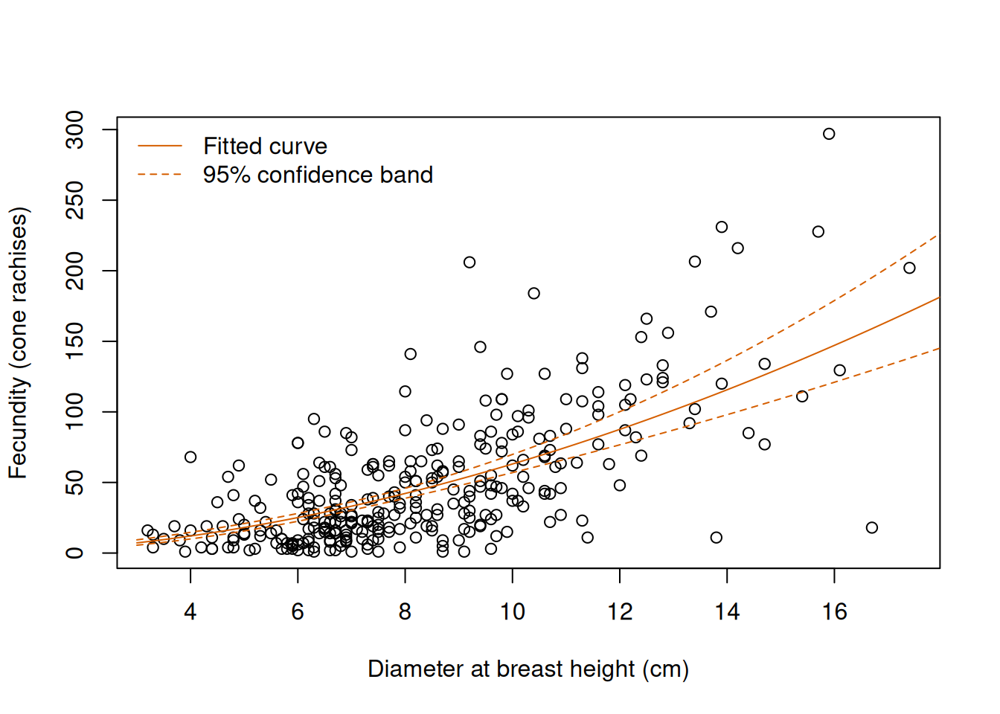
The band is pointwise: at each diameter, the interval contains the mean fecundity of the data generating process at that diameter in approximately 95% of hypothetical samples. On the log scale it is narrowest at about 8 cm, where the standard error of the logarithm of the mean is 0.043, so the interval extends about 8% on either side of the curve. It widens towards both ends, to standard errors of 0.13 at 3 cm and 0.11 at 17.4 cm, the largest tree. On the log scale the curve is a straight line in \(\log(x)\), \(\log(\mu(x))=\log(a)+b\log(x)\), and a line fitted to data is best determined in the middle of the observations, here around the geometric mean of the diameters, 7.9 cm. Half of the trees have diameters between 6.5 and 9.8 cm, and only six are larger than 15 cm, so away from the middle a change in the exponent moves the curve more and fewer trees hold it in place.
4 Exercise 4: Coverage of an interval for the time of the peak
This exercise is extra practice. In Exercise 1 the Wald interval and the likelihood profile interval for the time of the peak differed, and from one sample we cannot tell how often either of them contains the time of the peak of the data generating process. As in Exercise 5 of the Chapter 4 practical, we can find out by simulating hypothetical samples from a model whose parameters we know: here the Normal model fitted in Exercise 1, with the estimates as its parameters (see “Coverage checked by simulation” in Chapter 4). This exercise continues with the objects of Exercise 1. The function that runs the simulation is given below the questions with two gaps, which you fill in.
- Complete the first gap of the function
simulate_peak_time()below. Set seed 641 and simulate 2,000 hypothetical samples of the 27 titres, on the same days, from the fitted Normal model. Each sample is fitted from the values read by eye, as the data were. How many fits failed? Calculate the bias of the estimator of the time of the peak, with its Monte Carlo standard error, and compare the standard deviation of the estimates with the standard error of Exercise 1. Hint: the list of data of each sample needs the names thatnormal_nll()uses,dayandtitre. The bias is the mean of the estimates minus the time of the peak used to simulate, \(1/\hat b\) of Exercise 1. A Monte Carlo standard error measures how much a result of the simulation would vary if it were repeated with other random samples; for the bias, a mean of 2,000 estimates, it is the standard deviation of the estimates divided by \(\sqrt{2000}\). - Complete the second gap, which calculates the 95% Wald interval for the time of the peak from the row of
ADREPORT(), and calculate the coverage of the interval with its Monte Carlo standard error. (The coverage of the likelihood profile interval would needtmbprofile()in every sample, which takes much longer, so we do not simulate it here.) Hint: the coverage is a proportion \(c\) of 2,000 samples, so its Monte Carlo standard error is \(\sqrt{c(1-c)/2000}\), as in the solution of Exercise 5 of the Chapter 4 practical. - In how many samples does the interval lie entirely below the time of the peak that was used to simulate, and in how many entirely above it? What does this suggest, given the two intervals of question 3 of Exercise 1?
- Why do these results only approximate the behaviour of the interval for the real rabbits?
The function below needs normal_nll(), normal_obj, normal_fit, titre_data and titre_start from Exercise 1, the helper cmb(), and the object critical_value (the critical value of the standard Normal distribution for a 95% interval). It draws every sample with the function simulate() of the fitted object, and stores the results of every sample in one row of a data frame. In each gap, replace NA by your own code. The lines that follow a gap use the names of the objects that the gap creates, so keep those names.
# Hypothetical samples of the 27 titres from the Normal model fitted in Exercise 1. For
# each sample: the estimate of the time of the peak, its 95% Wald interval, and whether
# the fit converged.
simulate_peak_time = function(n_samples) {
results = data.frame(
estimate = rep(NA, times = n_samples),
lower = rep(NA, times = n_samples),
upper = rep(NA, times = n_samples),
converged = rep(NA, times = n_samples)
)
for (i in seq_len(n_samples)) {
# One hypothetical sample: titres on the same days, simulated at the estimates.
titre_sim = normal_obj$simulate(normal_fit$par)$titre
# GAP 1: connect normal_nll() to the days and the simulated titres and process it
# with MakeADFun(), starting from titre_start, and store the result in an object
# called sim_obj. Then fit it with optim() and method = "BFGS", and store the result
# in an object called sim_fit.
sim_obj = NA
sim_fit = NA
# GAP 2: from the row peak_time of summary(sdreport(sim_obj), select = "report"),
# the estimate of the time of the peak and the endpoints of its 95% Wald interval on
# the original scale, in objects called estimate, lower and upper.
estimate = NA
lower = NA
upper = NA
results$estimate[i] = estimate
results$lower[i] = lower
results$upper[i] = upper
results$converged[i] = sim_fit$convergence == 0
}
results
}4.1 Solution
4.1.1 Question 1
For each sample, gap 1 fits the model to the simulated titres exactly as Exercise 1 fitted it to the data, with cmb(), MakeADFun() and optim() from the values read by eye. The function is shown once, with both gaps filled in so that it can run; gap 2 is the subject of question 2:
# Hypothetical samples of the 27 titres from the Normal model fitted in Exercise 1. For
# each sample: the estimate of the time of the peak, its 95% Wald interval, and whether
# the fit converged.
simulate_peak_time = function(n_samples) {
results = data.frame(
estimate = rep(NA, times = n_samples),
lower = rep(NA, times = n_samples),
upper = rep(NA, times = n_samples),
converged = rep(NA, times = n_samples)
)
for (i in seq_len(n_samples)) {
# One hypothetical sample: titres on the same days, simulated at the estimates.
titre_sim = normal_obj$simulate(normal_fit$par)$titre
# Gap 1: fit the model to the simulated titres from the values read by eye.
sim_obj = MakeADFun(
cmb(normal_nll, list(day = titre_data$day, titre = titre_sim)),
titre_start,
silent = TRUE
)
sim_fit = optim(par = sim_obj$par, fn = sim_obj$fn, gr = sim_obj$gr, method = "BFGS")
# Gap 2: estimate and 95% Wald interval of the time of the peak, on the original scale.
sim_report = summary(sdreport(sim_obj), select = "report")
estimate = sim_report["peak_time", "Estimate"]
lower = estimate - critical_value * sim_report["peak_time", "Std. Error"]
upper = estimate + critical_value * sim_report["peak_time", "Std. Error"]
results$estimate[i] = estimate
results$lower[i] = lower
results$upper[i] = upper
results$converged[i] = sim_fit$convergence == 0
}
results
}The time of the peak that the samples are simulated from is \(1/\hat b\) of Exercise 1. We run the simulation (about half a minute) and count the failed fits, both those with a convergence code other than zero and those for which sdreport() could not calculate a standard error:
# 2,000 hypothetical samples from the model fitted in Exercise 1.
set.seed(seed = 641)
n_samples = 2000
peak_samples = simulate_peak_time(n_samples)
# Time of the peak used to simulate (days), and the number of failed fits.
peak_time_sim = 1 / b_mle
peak_time_sim[1] 6.052262sum(!peak_samples$converged | is.na(peak_samples$lower))[1] 0No fit failed. The bias is the mean of the estimates minus the time of the peak used to simulate. Its Monte Carlo standard error, the standard error of a mean of 2,000 values, is the standard deviation of the estimates divided by \(\sqrt{2000}\):
# Bias of the estimator of the time of the peak, its Monte Carlo standard error, and the
# standard deviation of the estimates next to the standard error of Exercise 1.
c(
bias = mean(peak_samples$estimate) - peak_time_sim,
mc_se_bias = sd(peak_samples$estimate) / sqrt(n_samples),
sd_estimates = sd(peak_samples$estimate),
se_exercise_1 = summary(normal_sd, select = "report")["peak_time", "Std. Error"]
) bias mc_se_bias sd_estimates se_exercise_1
0.019098432 0.008529676 0.381458716 0.382950133 The bias is 0.019 days, about two Monte Carlo standard errors (0.0085 days) from zero. So the estimator may be slightly biased upwards, but by about 0.3% of the time of the peak, which is negligible compared with its standard error. The standard deviation of the estimates across the hypothetical samples, 0.381 days, agrees with the standard error that sdreport() calculated from the curvature of the log-likelihood of the data, 0.383 days. With 27 observations the standard error describes the spread of the estimator well.
4.1.2 Question 2
Gap 2 of the function of question 1 takes the estimate and the standard error of the time of the peak from the row peak_time of ADREPORT() and calculates the Wald interval on the original scale, as in question 3 of Exercise 1. The interval contains the time of the peak used to simulate when its lower endpoint is below that value and its upper endpoint above it. The coverage is the fraction of samples in which this is the case, and its Monte Carlo standard error is that of a proportion:
# Coverage of the Wald interval, and its Monte Carlo standard error.
covered = peak_samples$lower <= peak_time_sim & peak_time_sim <= peak_samples$upper
coverage = mean(covered)
c(coverage = coverage, mc_se = sqrt(coverage * (1 - coverage) / n_samples)) coverage mc_se
0.926500000 0.005835141 The coverage is 0.927, with a Monte Carlo standard error of 0.006, so it lies about four standard errors below the nominal 0.95. The Wald interval of the time of the peak contains the value used to simulate slightly less often than its confidence level states: with 27 observations it is an approximation.
4.1.3 Question 3
An interval lies entirely below the value used to simulate when its upper endpoint is below that value, and entirely above it when its lower endpoint is above it:
# Intervals that miss on each side of the time of the peak used to simulate.
c(
below = sum(peak_samples$upper < peak_time_sim),
above = sum(peak_samples$lower > peak_time_sim)
)below above
104 43 Of the 147 intervals that miss, 104 lie below the time of the peak used to simulate and 43 above it. A good interval would miss about equally often on both sides (about 50 times on each side in 2,000 samples). The Wald interval is symmetric around the estimate, whereas in question 3 of Exercise 1 the likelihood profile interval extended further above the estimate than below it, which is what an interval needs in order to miss less often on the low side. This suggests that the profile interval would have a coverage closer to 95% and that it would miss more evenly on both sides. Only a simulation that calculates the profile interval in every sample could show this.
4.1.4 Question 4
The simulation describes the behaviour of the interval when the data generating process is the fitted model: titres that follow a Ricker curve exactly, with the estimates of Exercise 1 as its parameters, and that vary around it according to a Normal distribution with the same standard deviation on every day, independently of each other. The parameters of the process that generated the real titres are unknown and differ from the estimates, and the coverage would be somewhat different with other parameter values. The model is also an approximation: the residuals of Exercise 1 suggested that the titre levels off after its peak, which a Ricker curve cannot do, and the titres of the real rabbits need not be independent or Normal. With a misspecified model the properties of estimators and intervals change (see Misspecified models), which this simulation does not explore. So the results approximate the behaviour of the interval for the real rabbits, and the approximation is better the closer the fitted model is to the data generating process.